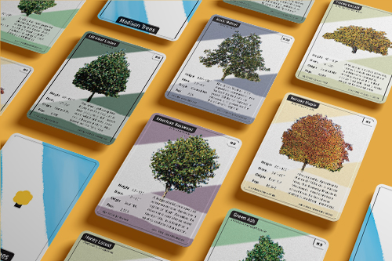
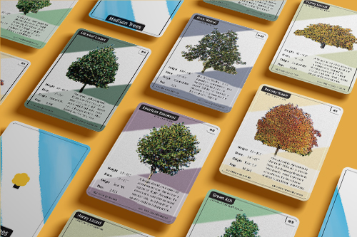

Packaging Design
An updated look for the classic breadcrumb brand. Work was done primarily in Adobe Illustrator. Pattern design, typography, branding, illustration.
Hi, I’m Casey, a designer and programmer in Madison, Wisconsin. I aim for designs that are clear, functional, and logical, with enough warmth and whimsy to feel human. Here are some past projects that I think demonstrate this philosophy. Enjoy!
An updated look for the classic breadcrumb brand. Work was done primarily in Adobe Illustrator. Pattern design, typography, branding, illustration.
A brand overhaul for a nature preserve, including logo, web design, brand system guidelines, and additional collateral. Illustrator, Photoshop, InDesign.


Designs for a mobile app. Original app idea and mockups for a few screens, all designed to fit within existing brand standards. Mostly Photoshop.
 
